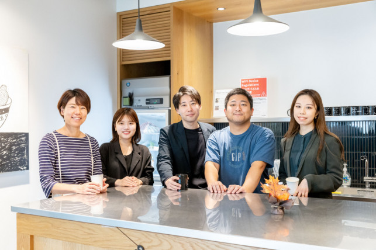
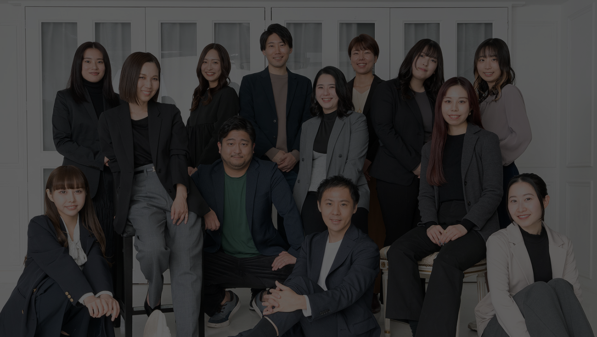

CASE 01
SaaS — MKT / SALES
リード単価高騰の打開と
リード単価高騰の打開と
商談化率の倍増
- 業界
- 大手 SaaS
- 期間
- 6 ヶ月
- 成果
- CPL -38% ／ 商談化率 ×1.6
WONDERPRAX — RENEWED 2026
コンサルではない、伴走者だ。
WonderPrax は事業の現場に踏み込み、
戦略から実行までを担う事業成長パートナーです。

MEMBERS — 2026戦略は 描いて終わり、ではない。
数字を動かすところまで、私たちの仕事。
教えるのではなく、一緒に走る。
4 つの領域を、職種で分断しない。
経営の目線で、若手も意思決定する。
— これが、WonderPrax のスタンス。
旧「ワンダーコンサルティング」から、WonderPrax へ。
私たちは、戦略・戦術・人材・データの高度な連携によって、企業の中に再現性のあるマーケティング力を残していく ——
マーケティングイネーブルメント を掲げる伴走支援型パートナーです。
※ サンプル指標。本番公開前に丸山社長確認のうえ確定します。
新規事業開発・マーケティング・営業・AI/DX。
WonderPrax は 4 つの領域を職種で分断せず、相互に連携させて事業成長を加速させます。
WonderPrax の伴走には、3 つの組織原則があります。
これらを犠牲にする選択は、どれだけ合理的に見えてもしません。
提案で終わる仕事はしません。クライアントの KPI が動かなければ、それは私たちの責任です。戦略レイヤーと実行レイヤーを職種で分断せず、同じ人間が両方を担います。
マーケの人だから営業のことは知らない、というメンバーを作りません。4 領域を行き来できる人材が、事業の本当の課題を解ける、という前提に立っています。
承認のための承認、報告のための報告は作りません。代表との距離が近いまま、若手でも経営の目線で意思決定する組織であり続けます。
5 つの事業課題と、私たちの介入の記録。
※ サンプルケースです。掲載は本番公開前に丸山社長確認のうえ確定します。

事業の現場に立つ、WonderPrax のコアメンバー。

事業会社の経営・新規事業立ち上げを経て、WonderPrax を創業。「教えるのではなく、一緒に走る」を体現する伴走者。
大手コンサル出身。マーケ戦略から実行までを一気通貫で担当。「数字を動かす提案」を信条に。
B2B 営業 8 年。経営層への提案からクロージング、伴走チームへのハンドオフまでを担う。
SaaS 企業の PdM 出身。データ基盤と AI 活用で、業務に効く DX を設計・実装する。
スタートアップ複数社で 0→1 立ち上げを経験。市場機会の特定から MVP 設計までを伴走。
ブランドストーリーから事業のメッセージング、UI/UX まで。事業成長を「伝わる形」にする。
※ メンバープロフィールはサンプルです。本番では撮り下ろし＋ヒアリングを前提とします。
※ ニュースはプレースホルダーです。本番では運用フローを別途設計します。
事業成長の課題、新規事業の構想、組織の悩み —
30 分のオンライン壁打ちから、お気軽にご相談ください。